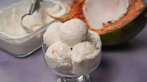
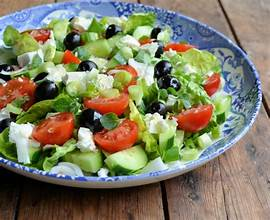
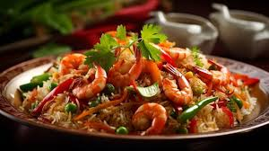

Sri Lankan Delights
Breakfast
Milk Rice (Kiribath)
A traditional dish of rice cooked in coconut milk, usually served with lunu miris (spicy onion sambol) or jaggery.
Preparation Time: 20 minutes | Serving Size: 1 people | Spice Level: Medium
Vegetarian Option Available
Price: 200.00

String Hoppers (Idiyappam)
Steamed rice noodles served with coconut milk curry, dhal curry, or pol sambol.
Preparation Time: 15 minutes | Serving Size: 1 person | Spice Level: Mild
Vegetarian Option Available
Price: 250.00
Pittu
A mix of rice flour and coconut, steamed in a cylindrical mold, typically served with coconut milk and curries.
Preparation Time: 20 minutes | Serving Size: 2 people | Spice Level: Medium
Vegetarian Option Available
Price: 400.00
Dosa
A thin, crispy crepe made from fermented rice and lentil batter, served with sambar and coconut chutney.
Preparation Time: 10 minutes | Serving Size: 1 person | Spice Level: Medium
Vegetarian Option Available
Price: 300.00
Pol Roti
Flatbread made with grated coconut, flour, and salt, often enjoyed with a curry or sambol.
Preparation Time: 15 minutes | Serving Size: 2 people | Spice Level: Hot
Vegetarian Option Available
Price: 400.00
Hoppers (Appa)
Bowl-shaped pancakes made from fermented rice flour, with a crispy edge and soft center, often topped with an egg.
Preparation Time: 10 minutes | Serving Size: 2 people | Spice Level: Mild
Vegetarian Option Available
Price: 200.00
Lunch
Rice and Curry
A staple lunch meal with steamed rice served with a selection of curries (chicken, fish, vegetable), dhal, sambol, and pickles.
Preparation Time: 25 minutes | Serving Size: 1 person | Spice Level: Hot
Vegetarian Option Available
Price: 500.00

Kottu Roti
Stir-fried shredded roti bread mixed with vegetables, meat (chicken, beef, or mutton), or egg, seasoned with spices.
Preparation Time: 20 minutes | Serving Size: 1-2 people | Spice Level: Hot
Vegetarian Option Available
Price: 600.00
Dinner
Hoppers (Appam)
A popular dinner item, often served with egg, dhal curry, or chicken curry.
Preparation Time: 10 minutes | Serving Size: 1 person | Spice Level: Mild
Vegetarian Option Available
Price: 200.00
Devilled Chicken/Beef/Prawns
Spicy and tangy stir-fried dish with meat and vegetables, often served with rice or fried rice.
Preparation Time: 15 minutes | Serving Size: 2 people | Spice Level: Extra Hot
Price: 750.00
Appetizers
Fish Cutlets
Deep-fried fish balls made with spiced mashed potatoes and fish.
Preparation Time: 15 minutes | Serving Size: 4-6 pieces | Spice Level: Medium
Price: 200.00
Chicken Samosa
Deep-fried pastry pockets filled with spiced minced chicken, onions, and peas.
Preparation Time: 15 minutes | Serving Size: 4-6 pieces | Spice Level: Medium
Price: 350.00
Egg Devilled
Hard-boiled eggs fried with onions, chilies, and spices, creating a spicy and tangy appetizer.
Preparation Time: 15 minutes | Serving Size: 3-4 pieces | Spice Level: Medium
Price: 150.00
Vegetable Patties
Pastry filled with spiced mixed vegetables, deep-fried until golden and crispy.
Preparation Time: 15 minutes | Serving Size: 4-6 pieces | Spice Level: Medium
Vegetarian Option Available
Price: 200.00
Ice Cream and Desserts
Watalappam
A traditional Sri Lankan pudding made with coconut milk, jaggery, and spices like cardamom and nutmeg.
Preparation Time: 20 minutes | Serving Size: 4 people
Price: 500.00
Kiri Pani
A simple dessert of buffalo curd served with palm treacle.
Preparation Time: 5 minutes | Serving Size: 1 person
Price: 300.00

Coconut Ice Cream
Creamy coconut ice cream topped with roasted cashews and a drizzle of treacle.
Serving Size: 2 scoops
Price: 500.00
Mango Passion Fruit Sorbet
A refreshing sorbet made with ripe mangoes and tangy passion fruit.
Serving Size: 2 scoops
Price: 400.00
Italian Cuisine

Margherita Pizza
Classic pizza with tomato sauce, fresh mozzarella, basil, and extra virgin olive oil.
Preparation Time: 25 minutes | Serving Size: 8 slices | Spice Level: Hot
Vegetarian Option Available
Price: 1600.00
Spaghetti Carbonara
Spaghetti with a creamy sauce made from eggs, Pecorino Romano cheese, pancetta, and black pepper.
Preparation Time: 15 minutes | Serving Size: 1 person | Spice Level: Medium
Vegetarian Option Available
Price: 700.00
Chinese Cuisine
Kung Pao Chicken
Spicy stir-fried chicken with peanuts, vegetables, and chili peppers.
Preparation Time: 25 minutes | Serving Size: 2 people | Spice Level: Medium
Vegetarian Option Available
Price: 1200.00
Vegetable Spring Rolls
Crispy rolls filled with a mix of vegetables, served with sweet chili sauce.
Preparation Time: 20 minutes | Serving Size: 2 pieces| Spice Level: Medium
Price: 250.00
Burgers
Classic Cheeseburger
Juicy beef patty with cheddar cheese, lettuce, tomato, and special sauce on a toasted bun.
Preparation Time: 15 minutes | Serving Size: 1 burger | Spice Level: Medium
Vegetarian Option Available
Price: 600.00
Veggie Burger
House-made vegetable patty with avocado, sprouts, and chipotle mayo on a whole grain bun.
Preparation Time: 15 minutes | Serving Size: 1 burger | Spice Level: Medium
Price: 500.00
Soups
Tom Yum Soup
Thai hot and sour soup with shrimp, mushrooms, and aromatic spices.
Preparation Time: 20 minutes | Serving Size: 1 bowl | Spice Level: Medium
Vegetarian Option Available
Price: 400.00
Cream of Mushroom Soup
Rich and creamy soup made with a variety of fresh mushrooms and herbs.
Preparation Time: 25 minutes | Serving Size: 1 bowl | Spice Level: Mild
Vegetarian Option Available
Price: 600.00
Side Dishes
Garlic Naan
Soft Indian flatbread topped with garlic and butter.
Preparation Time: 10 minutes | Serving Size: 2 pieces | Spice Level: Medium
Vegetarian Option Available
Price: 600.00

Greek Salad
Fresh salad with tomatoes, cucumbers, olives, feta cheese, and olive oil dressing.
Preparation Time: 10 minutes | Serving Size: 1 person | Spice Level: Medium
Vegetarian Option Available
Price: 400.00
Beverages
Ceylon Tea
World-famous Sri Lankan tea served plain or with milk.
Preparation Time: 5 minutes | Serving Size: 1 cup
Price: 250.00
Faluda
A cold, sweet beverage made with rose syrup, milk, ice cream, and basil seeds.
Preparation Time: 10 minutes | Serving Size: 1 glass
Price: 350.00
Mango Lassi
A refreshing yogurt-based drink blended with fresh mango and a hint of cardamom.
Preparation Time: 5 minutes | Serving Size: 1 glass
Price: 250.00
Fresh Lime Soda
A popular refreshing drink made with fresh lime juice, sugar, and soda water.
Preparation Time: 3 minutes | Serving Size: 1 glass
Price: 200.00
Noodles
Pad Thai
Stir-fried rice noodles with shrimp, tofu, peanuts, bean sprouts, and tamarind sauce.
Preparation Time: 15 minutes | Serving Size: 1 person | Spice Level: Medium
Vegetarian Option Available
Price: 750.00
Singapore Noodles
Stir-fried rice vermicelli with curry powder, shrimp, char siu pork, and vegetables.
Preparation Time: 15 minutes | Serving Size: 1 person | Spice Level: Medium
Vegetarian Option Available
Price: 400.00
Japchae
Korean glass noodles stir-fried with vegetables and beef, seasoned with soy sauce and sesame oil.
Preparation Time: 20 minutes | Serving Size: 1 person | Spice Level: Medium
Vegetarian Option Available
Price: 450.00
Beef Chow Fun
Stir-fried wide rice noodles with tender beef slices, bean sprouts, and scallions in a savory sauce.
Preparation Time: 20 minutes | Serving Size: 1 person | Spice Level: Hot
Vegetarian Option Available
Price: 700.00

Tonkotsu Ramen
Japanese noodle soup with rich pork bone broth, chashu pork, soft-boiled egg, and various toppings.
Preparation Time: 15 minutes | Serving Size: 1 bowl | Spice Level: Medium
Vegetarian Option Available
Price: 400.00
Fried Rice
Yangzhou Fried Rice
Chinese fried rice with shrimp, pork, eggs, and mixed vegetables.
Preparation Time: 15 minutes | Serving Size: 1 person | Spice Level: Medium
Vegetarian Option Available
Price: 650.00
Thai Pineapple Fried Rice
Fragrant fried rice with pineapple chunks, cashews, raisins, and curry powder, served in a pineapple bowl.
Preparation Time: 20 minutes | Serving Size: 1 person | Spice Level: Medium
Vegetarian Option Available
Price:1100.00
Kimchi Fried Rice
Korean-style fried rice with kimchi, spam or bacon, and topped with a fried egg.
Preparation Time: 15 minutes | Serving Size: 1 person | Spice Level: Medium
Vegetarian Option Available
Price: 1000.00

Nasi Goreng
Indonesian fried rice with sweet soy sauce, chicken, shrimp, and topped with a fried egg.
Preparation Time: 20 minutes | Serving Size: 1 person | Spice Level: Hot
Vegetarian Option Available
Price: 900.00

Seafood Fried Rice
Fried rice loaded with a variety of seafood including shrimp, squid, and scallops.
Preparation Time: 20 minutes | Serving Size: 1 person | Spice Level: Medium
Price: 950.00
Biryani

Chicken Biryani
Fragrant basmati rice cooked with spiced chicken, herbs, and caramelized onions.
Preparation Time: 35 minutes | Serving Size: 2 people | Spice Level: Hot
Price: 1400.00
Vegetable Biryani
Aromatic rice dish cooked with mixed vegetables, spices, and fresh herbs.
Preparation Time: 30 minutes | Serving Size: 2 people | Spice Level: Medium
Vegetarian Option Available
Price: 1100.00

Lamb Biryani
Rich and flavorful biryani made with tender lamb pieces, basmati rice, and a blend of aromatic spices.
Preparation Time: 30 minutes | Serving Size: 2 people | Spice Level: Medium
Price: 1600.00
Prawn Biryani
Delicate biryani featuring succulent prawns, fragrant rice, and a perfect balance of spices.
Preparation Time: 25 minutes | Serving Size: 2 people | Spice Level: Medium
Vegetarian Option Available
Price: 1200.00

Hyderabadi Biryani
A royal dish from Hyderabad, featuring layers of marinated meat and partially cooked rice, slow-cooked to perfection.
Preparation Time: 70 minutes | Serving Size: 2 people | Spice Level: Hot
Vegetarian Option Available
Price: 1700.00